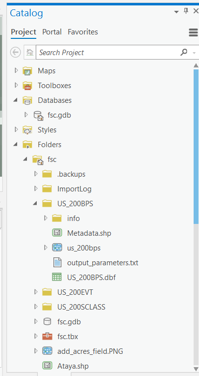
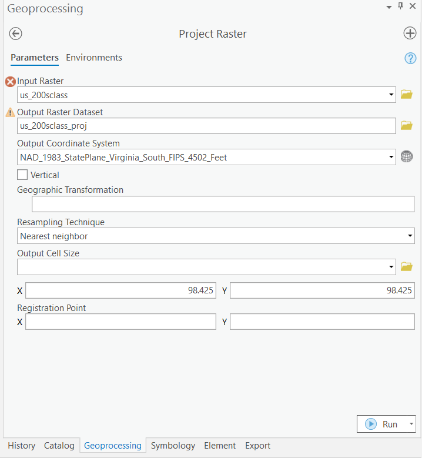
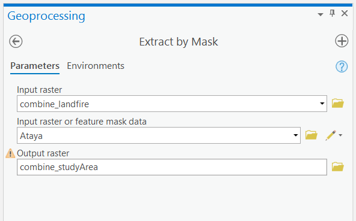
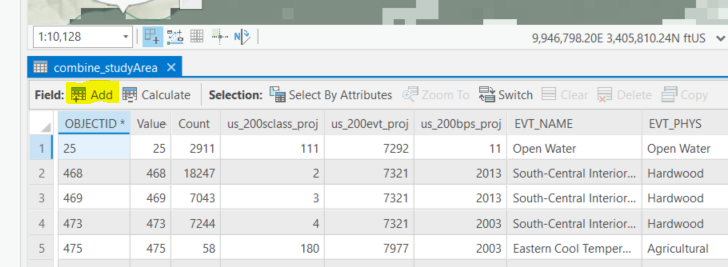
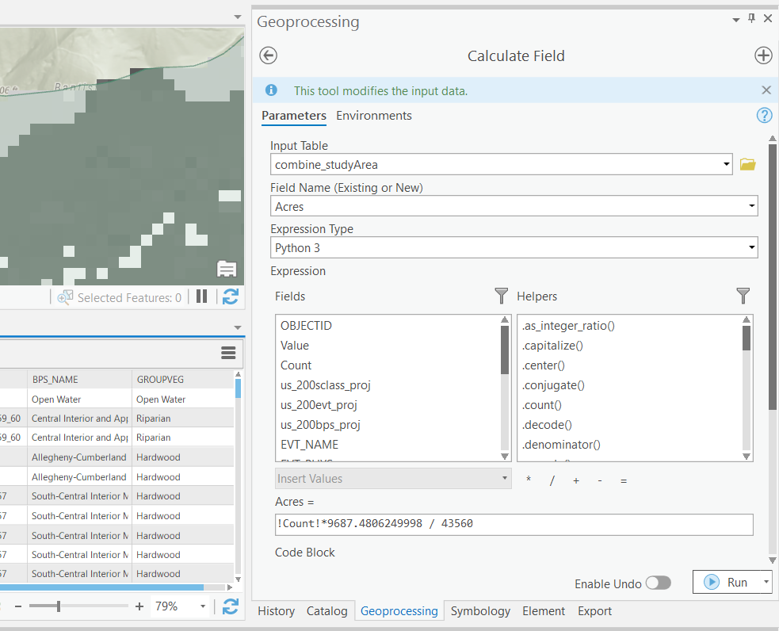

5 GIS Steps
5.1 If you haven’t already… Download this!
Download this [zipped folder] (https://github.com/rswaty/landfireFSC/blob/main/toDownload.zip) by clicking the hyperlinked text, then the “Download” button that will be on the right side of the screen. This folder contains:
- An Ataya shapefile
- Folders containing the BpS, EVT, and Sclass rasters
- An Excel file
- One ecosystem description
- An ArcGIS Pro map package file in case you want to explore in ArcPro. This map package includes the following:
- Our Ataya shapefile
- BpS, EVT, and SClass maps for Ataya
- A combined raster file of BpS, EVT, and Sclass datasets.
5.2 Load Spatial Data
Open ArcGIS Pro and create a new project using a blank map template. Move the downloaded Ataya shapefile tutorial data into your project folder.

Note that Pro creates a default geodatabase with the same name as your project. We recommend saving the Ataya shapefile to your geodatabase and hereafter, save intermediate layers to your geodatabase.
Consider your study area: Is it appropriate to end your analysis at the shapefile boundary? If you would like information to extend beyond the study boundary, consider creating a buffer. For our tutorial, we will limit our analysis to within the provided Ataya forest tract boundary.
5.3 Download Three (3) LANDFIRE Rasters for the Study Area: BpS, EVT, and sClass
There are multiple ways to get LANDFIRE products.
- For the spatial datasets you can explore options here, including:
- Use the LANDFIRE Data Distribution Site. With this method you essentially select the datasets you need then draw a rectangle (or you can select state or counties) around your area of interest to start the downloader. We recommend this if your area of interest is not too large and/or you have a low number of landscapes and/or have storage limits. Recommended for this tutorial.
- Download Full Extent Mosaics to obtain large files that cover the entire lower 48, AK or HI (depending on your selection). We use this method when we have several landscapes and/or a large area and no computer storage issues.
For some LANDFIRE data products, like the BpS model, the model (spatial data) and descriptions are downloaded separately: * For BpS models and descriptions go to: http://landfirereview.org/search.php. Start by clicking on the “View map of LANDFIRE Map Zones”. This will help you narrow down your search. We recommend downloading descriptions for BpS models relevant to your study area.

Note that for this tutorial, we downloaded rasters by using the rectangle drawing tool and drew a rectangle that was larger than our Study Area. This ensures no raster cell data is lost in our calculations. This tutorial allows us to “cut” out that extra area in the end. If you are downloading your own data, always make sure to draw a downloading box that is larger than your Study Area to prevent GIS errors.
Once downloaded, move the LANDFIRE data product downloads into your Pro project folder. You should have a BpS, EVT, and SCLASS folder. Each folder contains metadata, a corresponding database table, and a raster.

5.4 Project to the Appropriate Coordinate System
The spatial reference of the Ataya tract shapefile is NAD83_StatePlane_VA_South_FIPS_4502_Feet Projected Coordinate System (Geographic Coordinate System NAD 1983).

LANDFIRE data (BpS, EVT, sClass rasters) was downloaded as “Best Fit UTM (NAD83 Datum)” so the Projected Coordinate System of the LANDFIRE rasters is NAD83_UTM_Zone_17N (Geographic Coordinate System was GCS_North American_1983). Given the size and location of our study area, we’ll use the Virginia State Plane (South) as our map coordinate system. Note: unit is feet.
Use the Project Raster tool to project each raster to the Virginia State Plane (South) coordinate system. Save the projected raster to the project geodatabase. Since the datum is the same for State Plane and UTM, no “Geographic Transformation” was needed. Resampling technique was “Nearest Neighbor” which is preferred for categorical/discrete data. Output cell size was in feet (98.425ft. = 30m.)

- Project the BpS, EVT, and sClass Rasters (sClass projection shown above).
- These (3) new rasters can now be used to create GIS maps for:
- Historical ecosystems (Bps)
- Existing ecosystem types and land cover (EVT)
- Succesion class maps (sClass)
5.5 LANDFIRE Data Stacking
The three used LANDFIRE data products (BpS, EVT, sClass) provide unique aspects of land cover information. Because each raster maintains the same 30 x 30 meter cell, we can stack the LANDFIRE rasters to gain information about each arbitrary pixel within our study area.
Before we combine the rasters, take a look at the attribute table for each raster. Details on attributes can be found at landfire.gov Open the Combine tool. This tool can be found by running a search in geoprocessing or you can find it in the Spatial Analyst Toolbox. Run the combine tool using the (3) project LANDFIRE rasters: us_200bps_proj, us_200evt_proj, is_200sclass_proj. Output raster was labeled combine_landfire and saved within the project geodatabase.

Open the attribute table of the combine_landfire raster. You will notice that only the “Value” field was retained in the combine. Next we will perform joins to append tabular data to the combine_landfire raster.

5.6 Join BpS Tabular Data
Use the Join Field tool (found with a geoprocessing search) to permanently join BpS attributes to the combine_landfire raster. Follow these parameters:
- Input Table = combine_landfire
- Input Join Field = us_200bps_proj
- Join Table = us_200bps_proj.
- Join Table Field = VALUE.
- Transfer Fields = BPS_CODE, BPS_MODEL, BPS_NAME, GROUPVEG. Note: selecting additional fields will prevent you from using the prepared excel pivot tables.

5.7 Join EVT Tabular Data
This second join is to import EVT attributes. Open the Join Field Tool again and follow these parameters:
- Input Table = combine_landfire
- Input Join Field = us_200evt_proj
- Join Table = us_200evt_proj
- Join Table Field = VALUE
- Transfer Fields = EVT_NAME, EVT_PHYS. Note: selecting additional fields will prevent you from using the prepared excel pivot tables.

5.8 Join sClass tabular data
The third and final join is to import the sClass attributes. Open the Join Field tool again and follow these parameters:
- Input Table = combine_landfire
- Input Join Field = us_200sclass_proj
- Join Table = us_200sclass_proj
- Join Table Field = VALUE
- Transfer Fields = LABEL, DESCRIPTION. Note: selecting additional fields will prevent you from using the prepared excel pivot tables.

5.9 Crop the combined raster to the study area
To “cut” the combined raster to the boundary of our shapefile, use the Extract by Mask tool. Follow these parameters:
- Input Raster = combine_landfire
- Input Raster or Feature Mask Data = Ataya feature class
- Output raster = combine_studyArea Reminder: if you decided to create a buffer around your study area, use the buffered study area feature class as your feature mask.

The resultant “combine_studyArea raster” will only contain pixels within the Ataya study region:

We choose to maintain the shape of the original raster (default setting within Extract by Mask tool), and thus the resultant extracted raster has jagged edges. Note that area calculations using the raster will differ slightly from area calculated from the vector feature.

5.10 Calculate Area Field
Next, we will calculate area using raster pixel size for “combine_studyArea” raster. Follow these steps:
- Open the combine_studyArea attribute table.
- Within the attribute table, create a new field called “Acres”. Select “Float” for data type to allow decimals in the calculation for acres.


- In the “Acres” field, right click on the top and scroll to “Calculate Field”.
- Select “Python 3” as the Expression Type.
- In “Acres =” banner, type this expression: !Count! *9687.4806249998 / 43560.
- Click “Apply”, then “OK”.

The sum of the Acres field corresponds to the total Ataya area (~100,653 acres).

Understanding the Field Calculation Expression
- We use raster cell size to ascertain acreage. (See: https://gis.stackexchange.com/questions/106883/measuring-area-of-raster-classes) . Our general calculation to determine acreage is [Pixel count of xxx unique raster value] x [Area of a pixel (feet)] x [1 acre/43,560 sqft] = xxx acres of a specific unique raster value
- !Count! is the number of raster pixels classified as a unique raster value. From our attribute table, we see that we have 549 unique raster values. These unique raster values hold unique combinations of our BpS x EVT x sClass data.
- Each original raster downloaded from LANDFIRE had a cell size of 30x30m. When we projected our rasters to Virginia State Plane South FIPS 4502 Feet, we changed the units of our rasters to feet; yielding cell size of 98.425 x 98.425 feet. The area of a single pixel is 98.425 x 98.425, equaling 9,687.4806. Therefore, we multiply !Count! by 9,687.4806. This yields the square footage associated with each unique raster value for our Study Area. To convert to acres, divide by 43,560 (1 acre = 43,560 sqft).
- If you are using a different unit (i.e. meters), you must adjust this calculation accordingly.
5.11 Export combine_studyArea attribute table into a .csv format
Now we’ll take our GIS attribute table and make it usable in Excel. The following steps provide instructions for turning an attribute table into a .csv file. If you want to turn the attribute table into a new excel workbook, please see the appendix.
- Within the attribute table panel, navigate to the ‘burger’ menu on the top right, and select Export Table.
- Select combine_studyArea as the Input Rows.
- Next, select a folder location to export your table. Save the table as a logical name, such as ataya_attributes with the .csv appendage. You must manually add the .csv appendage to export as a csv.

5.12 Open the Tutorial Excel Workbook
Next, open the Ataya _combineClean.xlsx in the toDownload folder containing tutorial-specific files. This template excel spreadsheet already contains the exported Ataya attribute table in the first tab. The remaining tabs contain templates for using pivot tables to summarize the Ataya attributes.
If you performed the tutorial using your own study area rather than the Ataya study area, copy your csv into the Ataya_combineClean.xslx template spreadsheet in the place of the ataya_attribute tab. Name the spreadsheet to better represent your study area. Next, delete the OID, BpS code, Value, and DESCRIPTION columns to match what’s in our workbook.
The following sections discuss analysis of historical conditions, current conditions, land use conversion and succession classes.